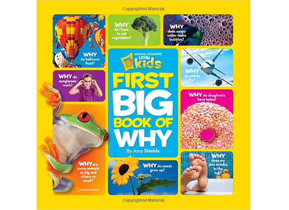
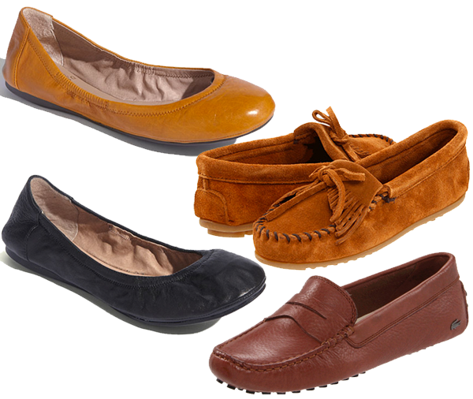

This is my most favorite book I’m reading the boys lately. I love these little dogs so much and it’s such a sweet little story.
Boot & Shoe by Marla Frazee, Amazon

This is my most favorite book I’m reading the boys lately. I love these little dogs so much and it’s such a sweet little story.
Boot & Shoe by Marla Frazee, Amazon

This book has been going strong at our house for a good two years. It’s our favorite! (mine too!) It’s a sweet story about how the Easter Bunny came to be.

We are big time kids books readers over here. Books before nap time, books before bedtime and in between. We are always on the hunt for good books. Just for reference I have a 4 year old and a not quite 2 year old. The 2 year old LOVES LOVES the Pete the Cat books with a passion. Literally he sees those books and squeals in delight.
Pete the Cat and His Four Groovy Buttons
Press Here My friend Kristina introduced me to this one and it’s just SO FUN because it’s very interactive.
This Moose Belongs to Me Anything Oliver Jeffers is a hit in our house, we have all of his books.
Dragons Love Tacos
Lemonade in Winter: A Book About Two Kids Counting Money This is fantastic for teaching about money.
Those Darn Squirrels!
Goldilocks and the Three Dinosaurs: As Retold by Mo Willems Mo Willems of Don’t Let the Pigeon..and Knuffle Bunny fame (of which we highly recommend all of those as well)
Spoon
Pete the Cat: I Love My White Shoes

If you are in possession of a small child of the speaking variety, this book may be of interest to you or him/her. At some point your child starts asking why this and why that. This book will assist you. Trust me. This book gives you answers to such things as Why do we have a belly button? Why do balloons float? Why do some people wear glasses?
Go forth and learn all the things.
National Geographic Little Kids First Big Book of Why

I think a while back we all talked about eye cream or skin care of something of that sort but I’ve changed up my routine a bit in the last year and thought I’d let yall know what I’m doing these days. I saw my dermatologist for the first time in YEARS last year and he had me implement a couple of new things. First he told me I needed to start using Retin-A for fine lines and blemishes. I LOVE how using the Retin-A makes my skin feel and, after a couple of weeks, look but I HATE the peeling that happens early on. When I first started using it, my face was peeling off! So I started researching how to not look like I was in a horror movie while I was out and about during the day and still using Retin-A. The first suggestion I found was that I should apply it after I wash my face but also after my face is 100% dry (so like 15 minutes after I wash my face). The second suggestion was Josie Maran Argan Oil. This stuff, you guys, it’s AMAZING! Once I implemented these two suggestions, I had way less peeling issues but still had great Retin-A results. My problem is that I forget to apply it 15 minutes after I wash my face at night because I BE TIRED YO. Anyway, the next thing my dermatologist suggested was this Skinceuticals LHA Cleansing Gel. I was still using Cetaphil from when I was pregnant with my youngest and I felt like my skin could use the change. I’ve used this Skinceuticals alone and with my Clarisonic and it’s great either way. It is expensive but lasts FOREVER because you seriously don’t have to use but a dime size amount. And the last bit to my skin care routine is the Biodroga eye cream. I’m am still loving this and still not having problems with it. Highly recommend.
Skinceuticals LHA Cleansing Gel
Biodroga Intense Moisture Formula Eye Care
Argan Oil

Have yall heard of this line of hair products that Jennifer Aniston started using and loved it so much that she is now a co-owner and face of the brand? So obvs that caught my eye because Jennifer Aniston is like my personal hair idol. I can’t tell you how many times I’ve taken a picture of her to the salon asking for whatever cut or color she’s got going on. A ton of times I tell ya…So anyway, when I heard she was connected to a line of products I for sure wanted to try it out. Amazon has a set of the products in sample sizes and that’s what I started with. My kit included shampoo, conditioner, straightening cream and a curling cream. I already used the shampoo and conditioner all up and while I loved it, what I think changed my hair the most has been the Straight Making Styling Cream. Not only does it make my hair straight and smooth but it also helps with the same in both second and third day hair. My hair is very thick and a “not pretty, wavy” if I let it air dry. So I pretty much hate the blow dry process, it takes FOREVER. This doesn’t change that fact but what it does help with is extending my style for longer. Love it!
Living Proof Frizz Styling Cream

I got two of these journals last week or so and I’m LOVING them. Basically it prompts you with a question to ask your child and you write down their response. It provides one question for every day of the year and has a spot for the next three years to record answers. We leave it on our kitchen table and ask our 4 year old the day’s question at breakfast or dinner or whenever we remember. So far it’s been very fun!! Let me give you an example of one of the responses I got yesterday:
Question/Prompt: I felt awful when_____
Answer: It was Sunday and I broke up with Taylor Swift.
(Don’t worry, they have since gotten back to together and have plans to marry)

I have lots of shoes, in lots of colors. But this past year has been pretty tough so I decided at some point (probably when I was wracking my brain for what to wear one day and was absolutely run into the ground) that I needed to just buy some nice looking comfortable flats that will go with EVERYTHING and I won’t have to THINK. So without further ado…the flats/moccasins/loafers that I’ve been living in for the past year (aside from flip flops in the summer):
Vince Camuto ‘Ellen’ Flat – Caramel This one and the black flat are the exact same shoe, different color. I bought the black ones first and wore them so much because they are SO COMFORTABLE that I bought the caramel just recently.
Minnetonka Kilty Suede Moc – Brown Suede These might be the closest thing to wearing slippers outside of your house you can get. SOOOOOOO comfortable.
Vince Camuto ‘Ellen’ Flat – Black
Lacoste Women’s Concours – Tan Suede LOVE LOVE LOVE these, again..very comfortable. I couldn’t find the exact ones that I own which are tan suede, but they are this same exact style. There are some really cute ones in this same style that are out right now that are brown with a berry colored detail–super duper cute.

I thought I’d share some stuff I’ve used in the last few months either via a sample or I’ve purchased and been using, that I’ve fallen in love with.

So, I have naturally jankywavy hair, but for the VAST majority of my life I have always worn my hair straight. Partly because I didn’t 100% know how to fix my hair when it was wavy, and partly because I had the time to spend on my hair so it didn’t really matter. BOY HOW THINGS CHANGE!
After C was born I learned right quick how to make my wavy hair look less janky and more CUTE…here are a couple of the products I use:
I spritz my wet hair w/ the curl booster and crinkle my hair up all over. I then use a diffuser to dry my hair. After that, I use a 1 inch curling iron to fix the janky parts of my hair, rub a small amount of redken glass through my hair, spray with hair spray, and voila! This process takes all of less than 10 minutes from start to finish (versus the 30+ minutes it takes me to straighten it from shower to door)…WOOHOO! Not too shabby eh?

Oh yeah, my fellow Tipsy gal Der took this pic. She has COMPLETELY found her calling in life ya’ll!


Recent Comments